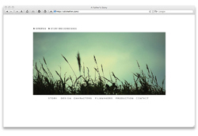
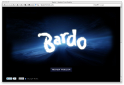
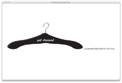
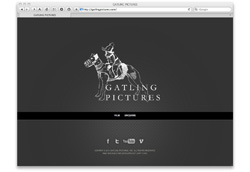
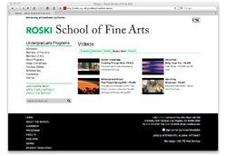
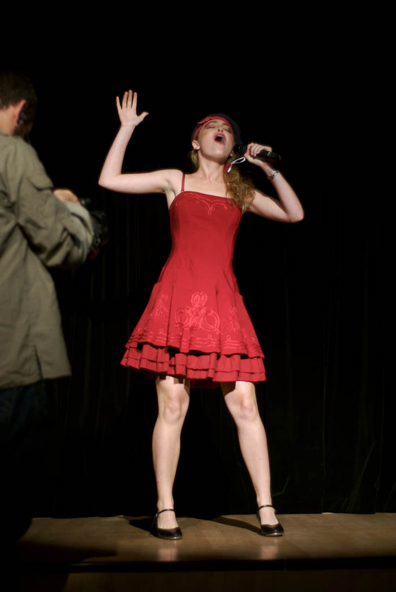
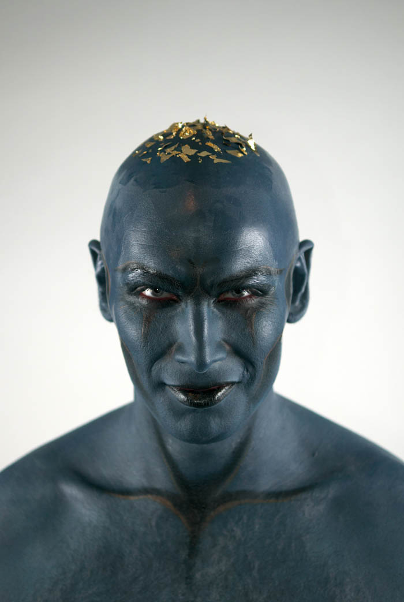
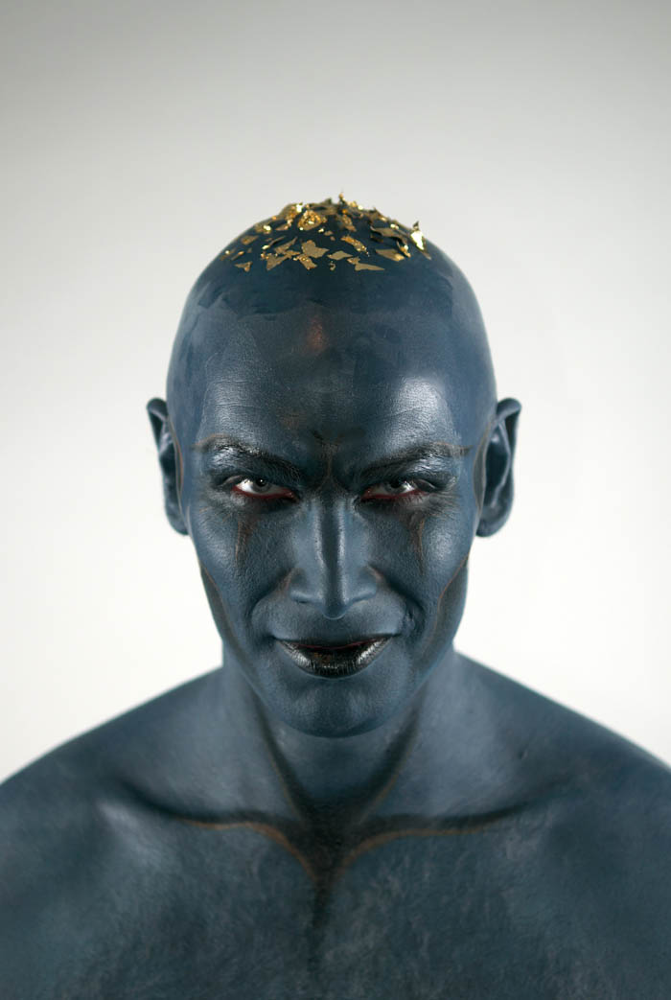

Welcome and Hello.
My name is Gary Fung and I make art. Here's a story I would like to share.
One day a lady ran into Pablo Picasso.
“It’s you — Picasso, the great artist! Oh, you must sketch my portrait! I insist.”
So Picasso agreed to sketch her. After studying her for a moment, he used a single pencil stroke to create her portrait.
He handed the women his work of art.
“It’s perfect!” she gushed. “You managed to capture my essence with one stroke, in one moment. Thank you! How much do I owe you?”
“Five thousand dollars,” the artist replied.
“B-b-but, what?” the woman sputtered. “How could you want so much money for this picture? It only took you a second to draw it!”
To which Picasso responded, “Madame, it took me my entire life.”
Sometimes I design, sometimes I
code, most of the time I do both.
Below are
some of my projects.





One thing I learned in Design 101 that I will never forget:
A
good photo makes up half of a good design.

 

I shoot sports and portraits (sorry no weddings.) Weapon: Nikon and Holga.
About. Gary Who?
My name is Gary Fung. I am a Designer, a Web Developer, and a Photographer.
I am from Hong Kong. I currently live in Los Angeles, CA.
Yes, it is far - Hong Kong is 15 hours away from Los Angeles. I came to the United States for college and I recently graduated from the University of Southern California with a B.A. degree in Economics and Fine Arts. Therefore I call myself an Artistic Economist. I love dogs. I have a female Pembroke Welsh Corgi. I am a Travel Enthusiaist and I love going around the world to look at art. You love art, don't you?
I am friendly and chill. ☺
Contact. And Hire Me!
My schedule is flexible. I would love to work for you!
tel: (213) 284-6578
email: gary@garymakesart.com
twitter: garymakesart
resume: read me
Copyright © Gary Fung MMXI
{kind=link}
{kind=link}
{kind=link}
{kind=link}